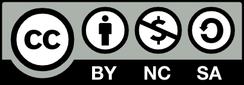

Nick Borko
Chief Technology Officer
Leaning Forward Technologies, LLC
May 14, 2013
Except where otherwise noted, this work is licensed under
http://creativecommons.org/licenses/by-nc-sa/3.0
Python 2.7.3 (default, Sep 26 2012, 21:53:58)
[GCC 4.7.2] on linux2
Type "help", "copyright", "credits" or "license" for more information.
>>> import this
The Zen of Python, by Tim Peters
Beautiful is better than ugly.
Explicit is better than implicit.
Simple is better than complex.
Complex is better than complicated.
Flat is better than nested.
Sparse is better than dense.
Readability counts.
Special cases aren't special enough to break the rules.
Although practicality beats purity.
Errors should never pass silently.
Unless explicitly silenced.
In the face of ambiguity, refuse the temptation to guess.
There should be one-- and preferably only one --obvious way to do it.
Although that way may not be obvious at first unless you're Dutch.
Now is better than never.
Although never is often better than *right* now.
If the implementation is hard to explain, it's a bad idea.
If the implementation is easy to explain, it may be a good idea.
Namespaces are one honking great idea -- let's do more of those!
>>> def evens(number_list):
return [ i for i in number_list if i % 2 == 0 ]evens = lambda n:filter(lambda x:not x%2,n)def area_rect(width, height):
return width * heightfrom operator import *
def area_rect(*arg):
return reduce(mul, arg[0:1])import json
def pretty_print_dict(d):
print(json.dumps(d, sort_keys=True, indent=4))import sys
def pretty_print_dict(d, indent=0):
for key in sorted(d.keys()):
sys.stdout.write(' ' % indent)
sys.stdout.write('%s: ' % key)
if isinstance(d[key], dict):
pretty_print_dict(d[key], indent + 4)
else:
sys.stdout.write(str(d[key]) + '\n')def dispatch_request(request, param1=None, param2=None):
if request == 'COMMAND1':
return comand1()
elif request == 'COMMAND2':
return command2(param1)
elif request == 'COMMAND3':
return command3(param1, param2)def dispatch_request(request, *arg):
return {'COMMAND1':command1, 'COMMAND2':command2, 'COMMAND3':command3}[request](*arg)def type_of_number(number):
result = []
if number == 0:
return 'ZERO'
if number > 0:
result.append('POSITIVE')
else:
result.append('NEGATIVE')
if number % 2:
result.append('ODD')
else:
result.append('EVEN');
return ' '.join(result)def type_of_number(number):
if number > 0:
if number % 2:
return 'POSITIVE ODD'
else:
return 'POSITIVE EVEN'
elif number < 0:
if number % 2:
return 'NEGATIVE ODD'
else:
return 'NEGATIVE EVEN'
else:
return 'ZERO'def factorial(number):
if number < 1:
raise ValueError(number)
elif number > 1:
return factorial(number - 1) * number
else:
return numberdef factorial(number):
if number<1:raise ValueError(number)
else:return factorial(number-1)*number if number>1 else numberdef full_name(first_name, last_name):
return ' '.join([first_name, last_name])def fln(fn, ln):
return '%(fn)s %(ln)s' % locals()sort(people, lambda person1, person2: cmp(person1.name, person2.name))def person_comparator(person1, person2):
if person1.name < person2.name:
return -1
elif person1.name > person2.name:
return 1
else:
return 0
sort(people, person_comparator)def list_operation(l):
if len(l) == 0:
raise ValueError
else:
...do some operation, possibly returning an empty list...
try:
result = list_operation(my_list)
except ValueError:
# it's alright if the list is empty...
result = []def list_operation(l):
if len(l) == 0:
return []
else:
...do some operation, possibly returning an empty list...
result = list_operation(my_list)if (a & (1<<3)) or (a & (1<<5)):if a & 1<<3 or a & 1<<5:with open('input.txt') as f:
line = f.readline().strip()
assert line != "" # no empty lines!f = open('input.txt')
f = readline().strip()
assert line != "" # no empty lines!def dispatch_request(request, param1=None, param2=None):
if request == 'COMMAND1':
return comand1()
elif request == 'COMMAND2':
return command2(param1)
elif request == 'COMMAND3':
return command3(param1, param2)def dispatch_request(request, *arg):
return {'COMMAND1':command1, 'COMMAND2':command2, 'COMMAND3':command3}[request](*arg)import sys
...
sys.exit(0)from sys import exit
...
exit(0)from sys import *program Fibonacci;
(* Print a Fibonacci series up to n *)
procedure fib(n:integer);
var a,b,temp:integer;
begin
a := 0;
b := 1;
while b < n do
begin
writeln(b);
temp := a;
a := b;
b := b + temp;
end;
end;
begin
(* print the fibonacci sequence up to 2000 *)
fib(2000);
end.def fib(n):
"""Print a Fibonacci series up to n."""
a, b = 0, 1
while b < n:
print(b)
a, b = b, a+b
# print the fibonacci sequence up to 2000
fib(2000)5 is an object"Hello, world" is an objectint is an objectdef is an objectA point on a cartesian graph can be represented as a tuple, (x, y)
A point module may have the following function (among others):
def distance_from_origin(point):
"""Calculate the distance from the origin (0, 0) to the point""
x, y = point
return ((x ** 2) + (y ** 2)) ** 0.5class Point(object):
"""Point class for tracking points on a 2d graph."""
def __init__(self, x=0, y=0):
"""
Constructor arguments:
x: The x coordinate of the point (default: 0)
y: The y coordinate of the point (default: 0)
"""
self._x = x
self._y = y
def __str__(self):
"""Return the string representation of the point as (x, y)"""
return '(%d, %d)' % (self._x, self._y)
def distance_from_origin(self):
"""Calculate the distance from the origin (0, 0) to the point"""
return ((self._x ** 2) + (self._y ** 2)) ** 0.5str())Modules are a kind of encapsulation for structural organization:
Why shouldn't you rely on modules for data encapsulation:
There are some notable exception when writing modules is better than writing classes:
How do you know if you should be using classes? Look for the following signs:
if __name__ == '__main__':
...your executable code..."import this" © 2013 by Nicholas Borko
